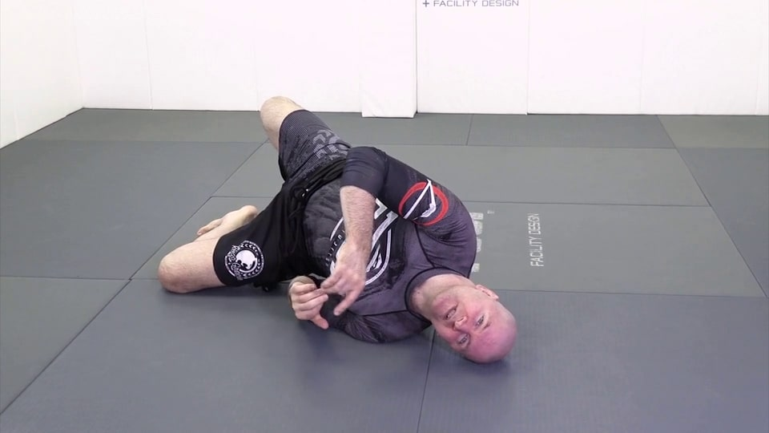
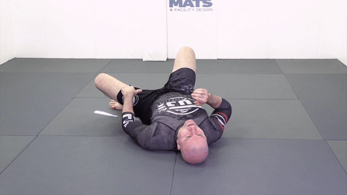
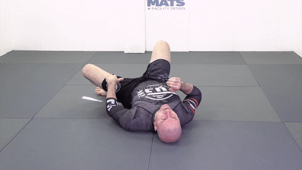

Джон Данахер. Соло-дриллы
Содержание
1. База
1.1 Bridge. Мост
Таз не совсем вверх - мы хотим сместить противника вбок, а не просто поднять высоко вверх

Колено в пол, пальцы ноги должны иметь возможность оттолкнуться от пола
Нас не должно сложить!

Голова - смотрим в ту сторону, в которую делаем мост

Не заваливаемся

Полный вариант правильный

 

1.2 Power shrimp. Креветка
Первое движение очень похоже на мост

Руки должны складываться вместе - во фрейм

Вид спереди - следим за ногами. Колено - в пол! Это даёт ему возможность выскользнуть из-под противника

Пола касаются ступни и плечо - это даёт подвижность

Не ползать по полу

Хотим добиться пересечения предплечья и нижнего колена (подтягиванем нижней стопы), перейти на другую сторону, потом обратно

Вид спереди

1.2 Sliding shrimp. Скользящая креветка
Скользим тазом по полу. Мы должны отъехать до уровня наших плеч - внутренний угол между корпусом или ногами ~ 90 градусов.

Обязательно отставить вернюю стопу в начале движения. Иначе не будет упора. Данахер немного приподнимает таз

Пример